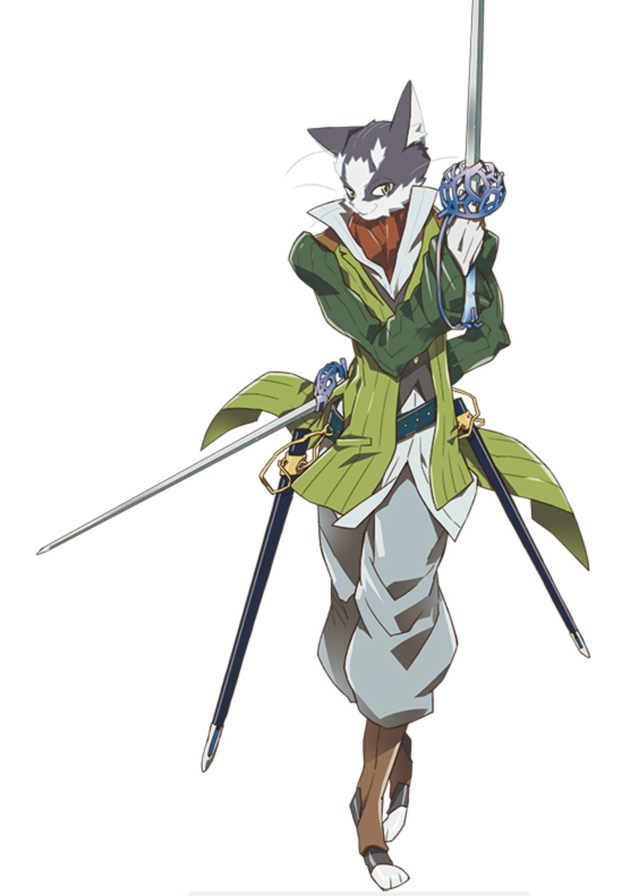
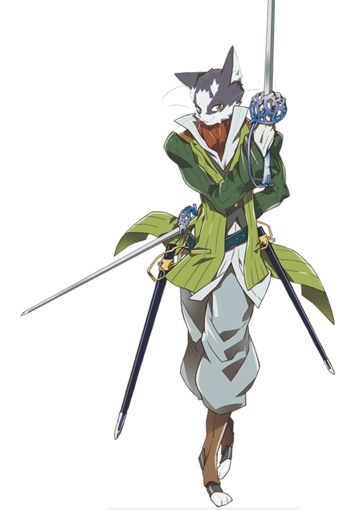
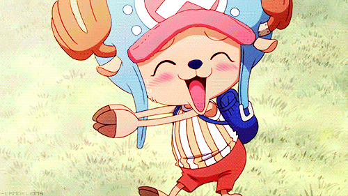
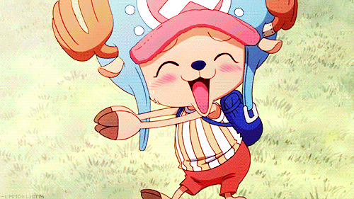
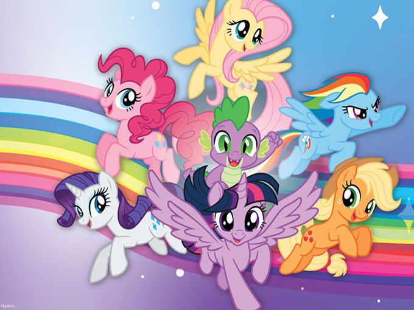
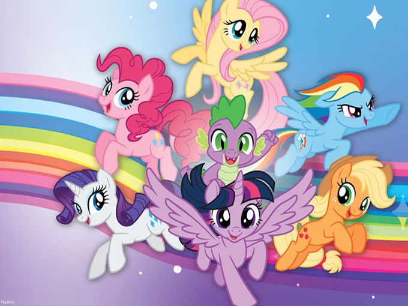

Demon Slayer is Overrated
 



Back in my Top 2019 Anime List (link), I put Demon Slayers as number 3 to a please the masses. At the time of that writing, I had yet to finish season 1 or read the manga. I have since finished watching season 1 although I still have yet to read the manga. That being said, based on season 1, I think it should’ve probably been pushed down to number 5. I decided to write this while the hype is still high. Don’t get me wrong, it is an ok anime. The animation is very well done. I commend Ufotable, Inc. (link) for the animation. It is top-notch. If it wasn’t for the animation, it would be crap. Where it is lacking, is the story. It could have been good, but it has some major issues that glare at you while watching it. It should be just another ok anime, but it has become an overrated it anime of the fall/ winter season. It has joined a long list of overrated anime. This list includes Attack on Titan and Sword Art Online. Overrated anime tend to be that seasons it anime. They are the most talked-about anime that season. Everyone is cosplaying it. All the memes are about it. Overrated anime tend to have an amazing first episode before going downhill and stabilizing as an ok anime.
 

Demon Slayer manga is by Koyoharu Gotoge (link). It is currently running in Shonen Jump Weekly alongside Dr. Stone, Black Clover, My Hero Academy, and One Piece. So I was expecting it to be good, but the story was not that great. Before we go on, I might as well warn you now there are spoilers ahead. So Demon Slayer is a story about Taishō, a swordsman who fights demons and works for the Demon Slayer Corps. He is joined by his sister, Nezuko, and his friends, Zenitsu and Inosuke.


This first episode is vitally beautiful and a great opening to a story. It sets up the protagonist and antagonist. Demons are excised and skilled swordsmen fight them to the death. Demons are created through biting a human, but not killing them. You need to be a super-strong demon to turn others into a demon. One such demon is Muzan Kibutsuji. He a powerful demon. He commands 12 generals and is the main protagonist who turned Nezuko into a demon.

So I was saying before that the anime is lacking. I think one of the main things it lacks is good side characters. It started with the introduction of the side characters AKA Taisho friends, Zenitsu Agatsuma and Inosuke Hashibira. They were both introduced in the same episode and they join Taisho during the same mission. That is fine for a 12 episode anime or a 24 episode anime, but not for a long-running Shone Jump Weekly series. The introduction of a character should be one at a time.
 


Now lets' talk about the people of the furry fandom. Being a furry is expressed in many different ways. With such a wide group of diverse people, furries express themselves from light stuff to extremes as many other fandoms do. Some draw anthropomorphic characters and some just enjoy watching and reading these types of shows and movies. Still others have taken a more literal approach with simple ears and tails which has sparked its own sub-genre with cat ears and fox tails being some of the most common. This is pretty light stuff when compared to fur suits.
Putting that aside, I’m all for a comedic relief character. One can break up the seriousness of the story as well as provide a glimpse of what the average jo would do in that crazy situation, but Zenitsu Agatsuma is the worst. He reminds me of a Ja Ja Binks. Zenitsu was introduced during the Demon Slayer Corps Final Selection. The Final Selection is a test a person must take to join the Demon Slayer Corps. It is a pretty brutal test that has a very low survival rate. It is also the first arc of the story. Zenitsu was one of the survivors of the test, but instead of introducing Taishō and teaming them up, their teaming up was pushed to a random meeting on the road a few episodes and 3 demons slaying missions later. You forget Zenitisu even existed by the time he is introduced.

Then there is Inosuke Hashibira who was introduced in the same episode as Zenitisu. He is a fine side character. He is not really developed too much. He does not like showing his face, so he wears a boar head as a mask. He believes he is really strong, but towards the end of the first season, he realized that he is not that strong and there are many people and demons far stronger than him. He is also a kid from the sticks and grew up on a mountain. He is not used to the modern world. It is kind of funny to watch him freak out about it.
The character that is everyone's wifu of the season is Nezuko. Nezuko was turned in to a demon then spent the first 15 episodes asleep in a back pack. Demons can't be exposed to sun light or they die. She is a pretty useless character for the most part. All she does is motivate Taisho, but not enhance the story. Maybe in future seasons, she will be more helpful, but for season 1, she was useless.
Also, just something I noticed. It might just be annoying me, but if you're going to create an interesting villain, don’t put their back story right before they get killed. It was useless and not needed at that point. This happened to the first of the Twelve Demon Moons. The Twelve Demon Moons are a group of demons under Muzan Kibutsuji's command. Each received his blood and now commands a few demons under them. So back to my point. Rui, a Twelve Demon Moon, had his back story randomly placed in the first half of the episode and by the end of the episode, he was dead. It goes back to my point about this being a long running series.
Well, I hope in future seasons, the anime improves, but who knows. All the problems could come from the anime adaptation of the manga. Like many works taken from literature, it is not uncommon to change things to make them shorter to fit the limited season run. We can only hope the story gets better with season 2 as well as a movie, both of which are coming out soon. So maybe my observations and problems with the story are wrong. In the comments below, you decide if I was right on in what I’m saying or am I wrong. Do you have another opinion?